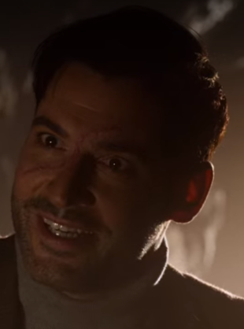
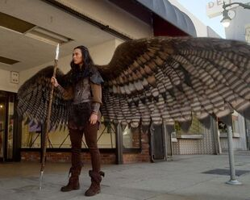
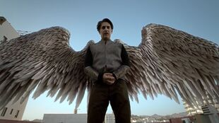
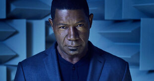
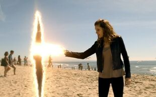
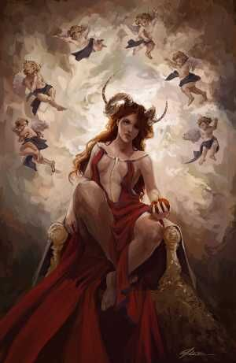

biographies des anges
Les Anges sont des êtres célestes extrêmement puissants qui servent Dieu et résident au Paradis.
Les anges sont les enfants de Dieu et de la Déesse. Ils ont grandi ensemble au Paradis. Comme les enfants humains, ils jouaient entre eux et dépendaient de leurs parents. Amenadiel est le plus ancien et est admiré par beaucoup de ses frères et sœurs.
Les anges sont des êtres autonomes et ne vivent pas en stricte harmonie les uns avec les autres. À travers les âges, ils ont eu des rivalités et des disputes entre eux.
Lucifer, alors connu sous le nom de Samael, était le favori de Dieu jusqu'à ce qu'il se rebelle. Dieu l'a chassé du ciel, le condamnant à gouverner l'Enfer pour l'éternité. Le reste des anges a continué à résider dans le ciel et à essayer d'agir dans la volonté de Dieu. En 2011, Lucifer a volontairement abdiqué, laissant l'enfer sans chef.
Les anges
| Lucifer |
Description |
 |
Nom : Lucifer |
| Age: inconnue |
| Lucifer Morningstar (de son vrai nom : Samaël, le Porteur de Lumière) est le protagoniste éponyme de la série télévisée Lucifer.
Il est l'un des Anges les plus jeunes et il est le chef infâme de l'Enfer. Il est communément appelé le Diable ou Satan par les humains. Lassé de gouverner l'Au-Delà des damnés depuis des lustres après avoir été éjecté du Paradis, Lucifer quitta volontairement sa position en Enfer pour devenir propriétaire d'une boîte de nuit à Los Angeles, appelé Lux.
Son amie et alliée la plus proche est la démone Mazikeen. Lucifer a commencé à travailler aux côtés du détective d'homicide du Département de Police de Los Angeles Chloe Decker quand il a été témoin du meurtre de Delilah, une connaissance proche. Sa position de consultant civil pour la Police et d'être le partenaire de Chloe lui donne un exutoire pour punir les pécheurs. Mais lorsque des démons viennent sur Terre pour créer des problèmes, Lucifer décide de retourner en enfer pour régner de nouveau en roi et les contenir.. |
 |
Nom : Amenadiel |
| Age: inconnue |
| Amenadiel est le premier ange qui fut créé par Dieu et la Déesse et par conséquent le plus âgé, et donc le frère aîné de Lucifer Morningstar et tous les autres anges. Il est venu sur Terre pour convaincre Lucifer de retourner en Enfer, après que Lucifer ait abdiqué le trône. |
|
Nom : Azrael |
| Age: inconnue |
| Azrael est un Ange et l'une des sœurs de Lucifer. Elle est surnommée « l'ange de la mort » et possédait une lame unique qui éradiquait tous ceux qui ont été tués avec.Uriel a volé sa lame quand il est allé sur Terre, avec l'intention de tuer leur mère. La lame est révélée plus tard comme étant une des trois parties de l'Épée Ardente (L'Épée de Samael / Lucifer). |
|  |
Nom : Michael |
| Age: inconnue |
| Michael est un archange et le frère jumeau de Lucifer. Il est capable d'être discerné de Lucifer par la cicatrice allant de son sourcil gauche à sa narine droite.Michael était l'un des nombreux anges nés de Dieu et de la déesse, mais il est spécial car il est un archange. Michael apparaît dans la saison cinq comme le principal antagoniste, se faisant d'abord passer pour Lucifer, puis en train de jouer avec sa vie de plusieurs manières différentes. |
|  |
Nom : Remiel |
| Age: inconnue |
| Remiel est un ange qui apparaît dans la Saison 4. C'est l'une des sœurs d'Amenadiel et elle a une profonde admiration pour lui. On sait très peu de son passé à part qu’elle a passé beaucoup de temps avec Amenadiel et qu’elle aime apparemment chasser au paradis. |
|  |
Nom : Uriel |
| Age: inconnue |
| Uriel était un ange. Il était un petit enfant et a toujours voulu jouer avec Lucifer ansi qu'avec ses frères et sœurs plus âgés, y compris Amenadiel. Cependant, ses frères et sœurs plus âgés l'ont exclu. Depuis lors, il a grandi, mais il est resté subordonné à ses frères et sœurs aînés. Ses fonctions incluent l'accueil des âmes des mortels justes décédés à travers un discours, que Lucifer décrit comme étant «pire que l'enfer». |
Dieu/Déesse
Ils ont les créateurs de l'univers, de l'humaniter et de tout ce qui est vivant.
| Dieu/Déesses |
Description |
|  |
Nom : Dieu |
| Age: inconnue |
| Dieu est l'un des deux co-créateurs de l'Univers et le père de tous les anges avec la Déesse. Il essaie apparemment de se faire racheter par Lucifer, comme le montre Frank Lawrence.L'histoire de Dieu n'est pas entièrement connue. Lui et la déesse sont tombés amoureux l'un de l'autre et ont créé collectivement l'univers, le ciel et l' enfer . Ils ont eu de nombreux enfants, appelés anges . Cependant, quand Il a commencé à travailler sur les humains , leur relation a empiré. Lorsque Lucifer s'est rebellé, Dieu était tellement en colère qu'il voulait détruire Lucifer. Au lieu de cela, à la demande de la Déesse, Il jeta Lucifer en Enfer pour punir les mortels morts pécheurs pour leurs péchés pour l'éternité. |
|  |
Nom : Déesse |
| Age: inconnue |
| La Déesse de la création, est la mère de tous les anges et l'ex-femme de Dieu. Elle a été enfermée en Enfer 2000 après que Lucifer y ai été envoyé et a été torturée par Mazikeen pendant 1000 ans.
Lors de l'absence de Lucifer en Enfer elle a réussit à s'échapper et a possédée le corps de Charlotte Richards étant donné que celle-ci n'a pas d'enveloppe corporel. (La Déesse et Dieu n'ont pas d'enveloppe corporel, pour interagir avec les humains ils doivent posséder un corps humain et l'utiliser comme véhicule).
Elle souhaitait à tout prix retourner au Paradis car le temps lui manquait et c'est pourquoi Lucifer avec l'Épée Ardente va lui ouvrir un vide pour qu'elle puisse s'y installer et se créer un Univers à elle sans que Dieu ne puisse y faire quoique ce soit. |
Les Démons
Pouvoirs:
Immortalité : Les démons ne peuvent pas être tués par des moyens ordinaires et ont une durée de vie indéfinie. Cependant, les démons n'ont pas d'âme et seraient éradiqués de l'existence s'ils étaient tués.
Force surhumaine : Les démons possèdent une force bien supérieure à celle d'un être humain, mais apparemment inférieure à celle d'un ange, comme Amenadiel.
Vitesse surhumaine : les démons sont capables de se déplacer beaucoup plus vite que les humains
Télékinésie : Mazikeen a pu invoquer son couteau pour se battre contre Amenadiel
Chronocinèse : Tout comme Lucifer, Mazikeen est capable de rester actif en période de ralentissement en présence d'Amenadiel.
| Démon |
Description |
|  |
Nom : Lilith |
| Age: inconnue |
Lilith est la mère de tout les démons. On sait seulement qu'elle est la première femme et épouse d'Adam mais que pour on ne sait quelle raison, elle a divorcé d'Adam, forçant Dieu à la remplacer par Eve. Par la suite, elle a fini en enfer et a eu une des démons comme descendance notamment Maze.
Des milliers d'enfants. |
 |
Nom : Mazikeen |
| Age: inconnue |
Mazikeen, également connu sous le surnom de Maze, est un Démon qui a la forme d'une jeune femme. Elle est la meilleure amie de Lucifer et travaillait autrefois à ses côtés à la discothèque Lux de Los Angeles avant de commencer une nouvelle carrière de chasseuse de primes au Département de Police. Maze est un démon et existe depuis des milliers d'années. Tandis que Lucifer était le dirigeant de l'Enfer, elle le servait et torturait les âmes des Humains décédés. Lucifer l'a appelée «la plus habile des bourreaux de l'enfer» et «la plus brutale des bourreaux de l'enfer». Quand Lucifer a quitté l'Enfer, Maze l'a suivi jusque sur Terre. Sous ses ordres, elle a coupé ses ailes. Par la suite, elle aide Lucifer dans ses diverses aventures à punir les méchants. Dans la Saison 2, elle emménage avec Chloe et Trixie et elles deviennent colocataires, elles apprennent à mieux se connaître et Trixie éprouve un attachement envers Maze.
Des milliers de frères et sœurs. |
 |
Nom : Dromos |
| Age: inconnue |
Dromos était un personnage mineur dans la quatrième saison. C'est un démon qui possédait le corps de William Kinley. Lui et les autres démons ont été les antagonistes des deux derniers épisodes de la saison. Dromos cherchait à faire de Charlie le nouveau roi des enfers avant que Lucifer, Amenadiel, Maze, Eve et Chloe ne déjouent le complot. Lucifer a ensuite forcé les démons à retourner en enfer.
Des milliers de frères et sœurs. |